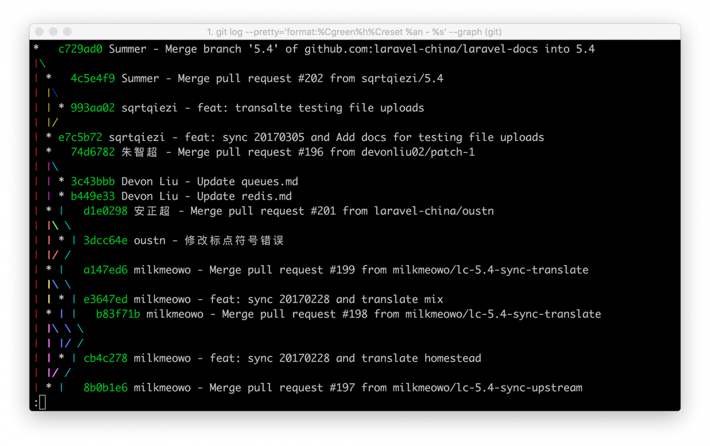
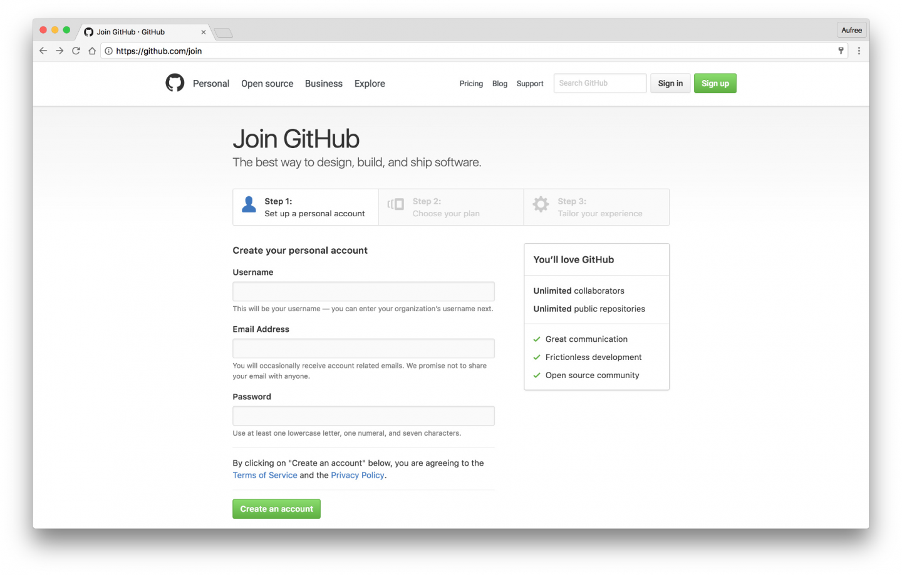
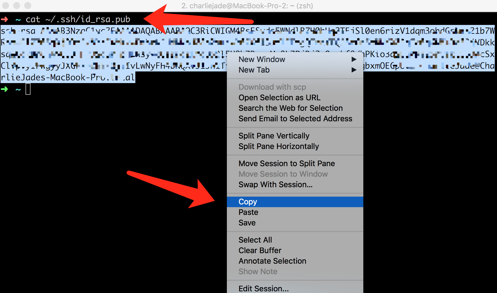
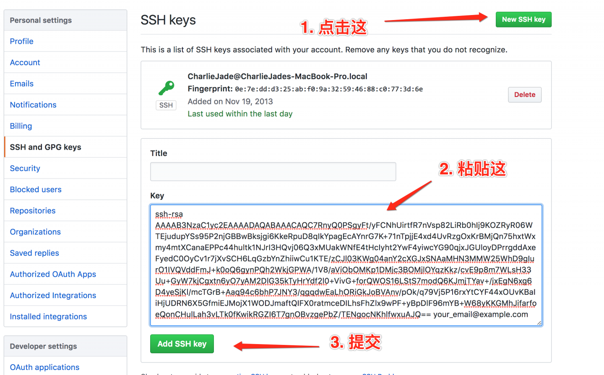
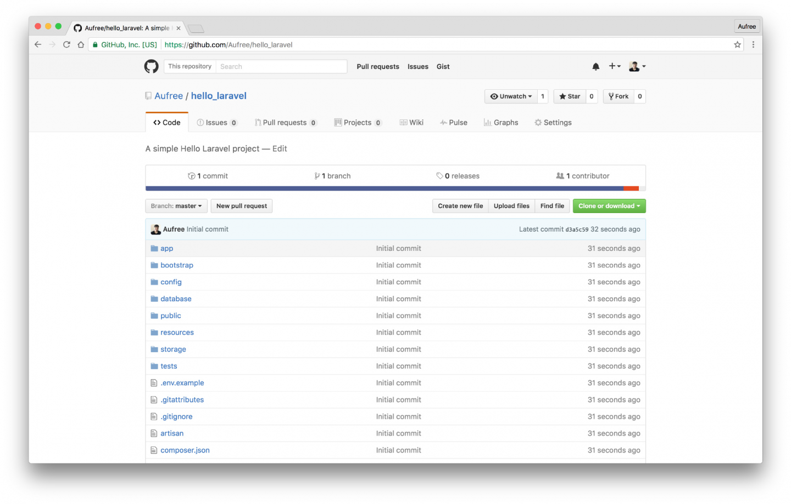

2.8. Git 与 GitHub
说明
在这一节中，我们将会学习：
- 什么是 Git ？
- 如何为 Git 做初始化配置？
- Git 的基本使用；
- 什么是 GitHub？
- 如何添加 SSH Key 到 GitHub 上？
- 如何新建 GitHub 项目？
- 如何提交代码到 GitHub？
什么是 Git？
Git 是 Linux 的创始人 Linus Torvalds 开源的一款分布式版本控制系统，以帮助开发者更好的对项目进行版本管理。每一个优秀的开发者在进行项目开发时都会第一时间给自己的项目加上 Git，以便能更好的追踪代码修改，进行版本回溯等操作。在多人协作的开发过程中，Git 更是必不可少的。因此，本书中将使用 Git 来管理项目的所有代码，让你在阅读本书的时候能够体会到 Git 的强大，了解实际开发中我们对 Git 的应用。
在现代化的项目开发中，Git 基本上是标配。
Git 的基本设置
在前面的章节中，我们为主机安装好了 Git。虚拟机 Homestead 中 Git 也是作为默认安装的软件。接下来大部分的 Git 操作都会发生在 Homestead 虚拟机中，因此我们需要先对其进行设置。
首先我们对 Git 进行用户名和邮箱进行设置，请参照下面格式，替换为你自己常用的用户名和邮箱来完成设置：
$ git config --global user.name "Your Name"
$ git config --global user.email your@example.com解释：
--global选项代表对 Git 进行全局设置。
这里个人信息设置的作用，是为你在代码提交时自动署名标记，方便查看提交日志时区分作者。如：
接下来设置 Git 推送分支时相关配置：
$ git config --global push.default simple此设置是 Git 命令 push 的默认模式为 simple，当我们执行 git push 没有指定分支时，自动使用当前分支，而不是报错。
Git 初体验
对于有经验的开发者来说，在他每次新建完开发项目的时候，首先要做的第一件事就是将自己的项目纳入到 Git 代码版本管理中，完成这个操作一般需要以下这几个步骤：
接下来我们拿上一节创建的 Laravel 项目来试验。以下命令请跟着我操作。
1、对 Git 进行初始化：
$ cd ~/Code/Laravel
$ git init2、将项目所有文件纳入到 Git 中：
$ git add -A我们可以通过在 .gitignore 文件中进行设置，来选择忽略掉一些我们不想纳入到 Git 版本管理中的文件（如缓存文件）。因此上面描述的『所有文件』指的是没在 .gitignore 中被忽略的文件。
3、检查 Git 状态：
$ git status上面命令将会向你输出存放在 Git 暂存区的文件，这意味着这些文件还未真正提交到 Git 中。
4、保留改动并提交：
$ git commit -m "Initial commit"上面这行命令会将暂存区的文件都提交到 Git，-m 选项后面带的参数表示本次提交的简单描述。
5、查看历史提交记录：
$ git log
commit 4d8896a697674861adec7e2ba8b7804412c0678d
Author: Aufree <summer@yousails.com>
Date: Wed Sep 7 07:54:11 2016 +0800
Initial commit从输出信息中可以很清晰的看到每次提交的作者、日期、描述等信息。注意看这里的 Author 项的内容就是我们上面设置的用户信息。 按 q 可退出查看。
Git 的强大
通过上面 Git 的基本讲解，你可能还无法真正体会到 Git 的强大。在平时开发中，我们有时候可能会因为手误或其它原因将某些重要文件删除。如果之前有将此文件纳入到 Git 中，这时便可以利用 Git 来对误删文件进行恢复。请看下面演示。
我们先假装不小心删除 composer.json 文件：
$ rm composer.json
$ ll使用 ll 打印出文件目录列表时，能看到 composer.json 文件已被成功移除。
查看 Git 状态：
$ git status
On branch master
Changes not staged for commit:
(use "git add/rm <file>..." to update what will be committed)
(use "git checkout -- <file>..." to discard changes in working directory)
deleted: composer.json
no changes added to commit (use "git add" and/or "git commit -a")能看到有相关提示显示 composer.json 文件已被删除，这时你可以选择将删除的文件进行恢复或提交。
下面我们使用 Git 进行恢复被删除文件：
$ git checkout -f
$ ll这时能看到 composer.json 文件已成功恢复。git checkout -f 的作用是将在暂存区的更改文件进行强制撤销。
上面强大的功能仅为 Git 的冰山一角，后面教程将讲解更多关于 Git 的使用。如果你想学习更多关于 Git 相关的知识，可以查阅《Pro Git》一书进行学习。
什么是 GitHub？
GitHub 是目前全球最大的代码托管平台，许多非常著名的项目如 Linux、Swift、Laravel 等都托管在 GitHub 上。开发者们利用 GitHub 来进行团队协作开发，查阅或收藏别人开源项目的优秀代码，针对某个 Bug 进行技术讨论等。使用 GitHub 的好处非常多，本书项目代码 也托管在 GitHub 上面。
如果要使用 GitHub，你需要完成下面这几步操作：
1. 注册 GitHub 账号
如果你还没有 GitHub 账号的话，请先 注册。
2. 为 GitHub 账号设置 SSH Key
出于安全考虑，Github 服务器和我们本地的通讯要求使用 SSH Key 来验证。在前面『环境部署』的章节中，我们已经在主机中生成过 SSH Key，并且 Homestead 在初始化时，通过 Homestaed.yaml 文件中的 keys 选项已经把主机中的 SSH Key 私钥复制到虚拟机中，所以这里我们无需再次生成 SSH Key。
接下来将 SSH Key 添加到 ssh-agent 中：
$ eval "$(ssh-agent -s)"
$ ssh-add ~/.ssh/id_rsa我们再回到 主机中 打印出公钥 id_rsa.pub 文件里的内容，并把输出的内容复制到剪贴板里：
> cat ~/.ssh/id_rsa.pub
最后我们需要将公钥添加到 GitHub 账号，先打开 Github SSH 令牌管理页面，然后把你刚刚复制的令牌按照下图示例添加：

3. 提交代码到 Github
在配置完 GitHub 账号之后，我们便可以开始在上面存放项目代码了。首先 新建一个 GitHub 仓库，取名为 hello_laravel，填上 Description 项目描述，Initialize this repository with a README 这一项无需勾选，因为 Laravel 已默认帮我们创建好了 readme.md 文件。
创建完成之后，使用以下命令将代码上传到 GitHub 上（将 your_username 替换为你自己的 GitHub 用户名）：
$ cd ~/Code/Laravel
$ git remote add origin git@github.com:your_username/hello_laravel.git
$ git push -u origin master至此，项目已成功托管到 GitHub 上。
后面我们如果对本地代码进行了改动，只需运行这 3 条命令即可将代码推送到安全可靠的 GitHub 上：
注意：以下命令作为知识重温，不需要执行。
1、保存到暂存区：
$ git add -A2、输入描述信息并提交到本地的 Git：
$ git commit -m "Say something"3、将代码推送到 GitHub：
$ git push